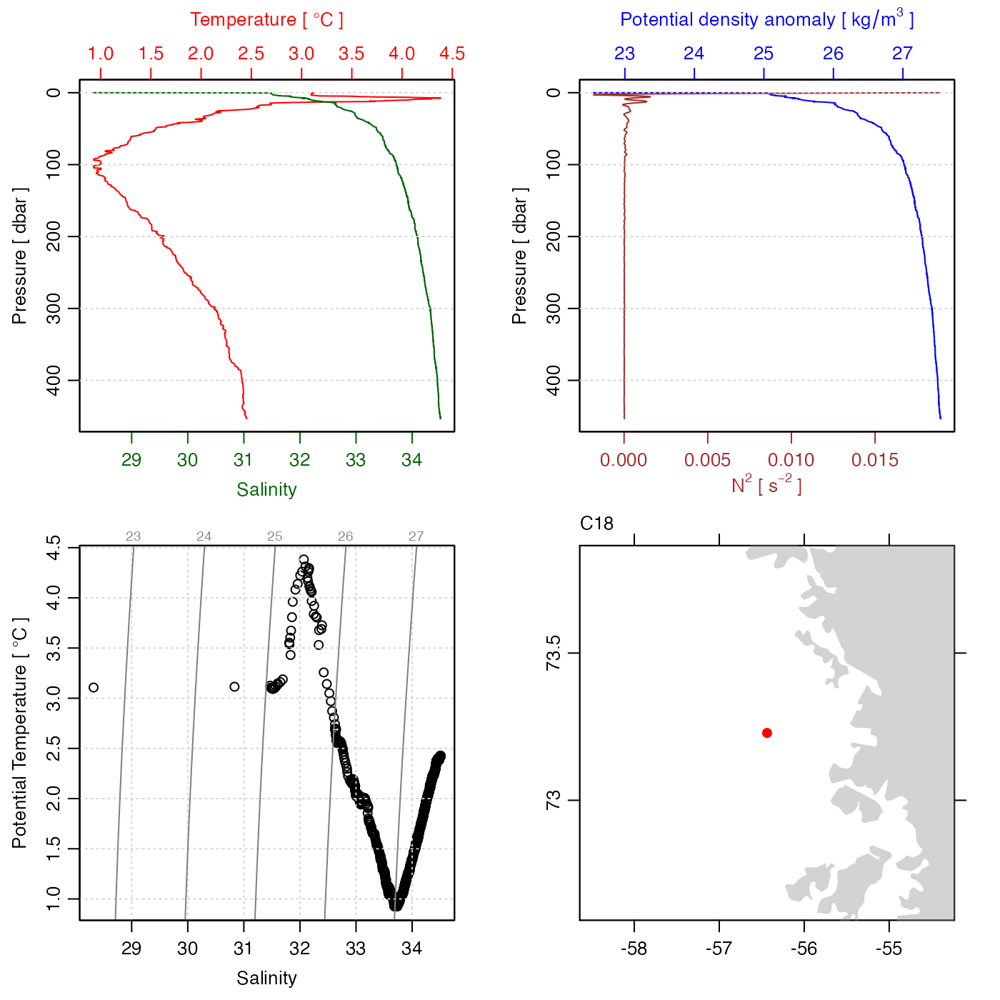

Rsk data may be in many forms, and it is not easy to devise a general plotting
strategy for all of them. The present function is quite crude, on the
assumption that users will understand their own datasets, and that they can
devise plots that are best-suited to their applications. Sometimes, the
sensible scheme is to coerce the object into another form, e.g. using
plot(as.ctd(rsk)) if the object contains CTD-like data. Other times,
users should extract data from the rsk object and construct plots
themselves. The idea is to use the present function mainly to get an overview,
and for that reason, the default plot type (set by which) is a set of
time-series plots, because the one thing that is definitely known about
rsk objects is that they contain a time vector in their
data slot.
# S4 method for rsk plot( x, which = "timeseries", tlim, ylim, xlab, ylab, tformat, drawTimeRange = getOption("oceDrawTimeRange"), abbreviateTimeRange = getOption("oceAbbreviateTimeRange"), useSmoothScatter = FALSE, mgp = getOption("oceMgp"), mar = c(mgp[1] + 1.5, mgp[1] + 1.5, 1.5, 1.5), main = "", debug = getOption("oceDebug"), ... )
| x | an rsk object. |
|---|---|
| which | character indicating desired plot types. These are
graphed in panels running down from the top of the page. See
“Details” for the meanings of various values of
|
| tlim | optional limits for time axis. If not provided, the value will be inferred from the data. |
| ylim | optional limits for the y axis. If not provided, the
value will be inferred from the data. (It is helpful to
specify this, if the auto-scaled value will be inappropriate,
e.g. if more lines are to be added later). Note that this is
ignored, unless |
| xlab | optional label for x axis. |
| ylab | optional label for y axis. |
| tformat | optional argument passed to |
| drawTimeRange | boolean that applies to panels with time as the horizontal axis, indicating whether to draw the time range in the top-left margin of the plot. |
| abbreviateTimeRange | boolean that applies to panels with time as the horizontal axis, indicating whether to abbreviate the second time in the time range (e.g. skipping the year, month, day, etc. if it's the same as the start time). |
| useSmoothScatter | a boolean to cause |
| mgp | 3-element numerical vector to use for |
| mar | value to be used with |
| main | main title for plot, used just on the top panel, if there are several panels. |
| debug | a flag that turns on debugging, if it exceeds 0. |
| ... | optional arguments passed to plotting functions. |
Plots produced are time series plots of the data in the
object. The default, which="timeseries" plots all data
fields, and over-rides any other specification. Specific fields
can be plotted by naming the field,
e.g. which="temperature" to plot a time series of just
the temperature field.
The documentation for rsk explains the structure of
rsk objects, and also outlines the other functions dealing with them.
Other functions that plot oce data:
download.amsr(),
plot,adp-method,
plot,adv-method,
plot,amsr-method,
plot,argo-method,
plot,bremen-method,
plot,cm-method,
plot,coastline-method,
plot,ctd-method,
plot,gps-method,
plot,ladp-method,
plot,landsat-method,
plot,lisst-method,
plot,lobo-method,
plot,met-method,
plot,odf-method,
plot,satellite-method,
plot,sealevel-method,
plot,section-method,
plot,tidem-method,
plot,topo-method,
plot,windrose-method,
plot,xbt-method,
plotProfile(),
plotScan(),
plotTS(),
tidem-class
Other things related to rsk data:
[[,rsk-method,
[[<-,rsk-method,
as.rsk(),
read.rsk(),
rsk-class,
rskPatm(),
rskToc(),
rsk,
subset,rsk-method,
summary,rsk-method
Dan Kelley and Clark Richards
## A multipanel plot of just pressure and temperature with ylim par(mfrow=c(2, 1)) plot(rsk, which="pressure", ylim=c(10, 30)) plot(rsk, which="temperature", ylim=c(2, 4))